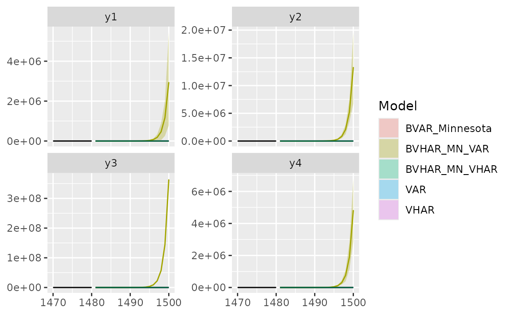
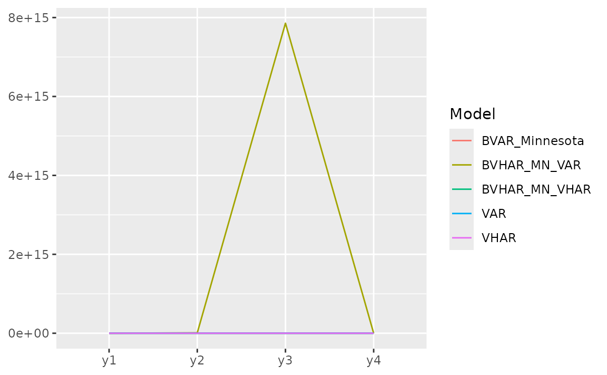

Simulation
Given VAR coefficient and VHAR coefficient each,
-
sim_var(num_sim, num_burn, var_coef, var_lag, sig_error, init)generates VAR process -
sim_vhar(num_sim, num_burn, vhar_coef, sig_error, init)generates VHAR process
We use coefficient matrix estimated by VAR(5) in introduction vignette.
Consider
coef(ex_fit)
#> GVZCLS OVXCLS EVZCLS VXFXICLS
#> GVZCLS_1 0.93302 -0.02332 -0.007712 -0.03853
#> OVXCLS_1 0.05429 1.00399 0.009806 0.01062
#> EVZCLS_1 0.06794 -0.13900 0.983825 0.07783
#> VXFXICLS_1 -0.03399 0.03404 0.020719 0.93350
#> GVZCLS_2 -0.07831 0.08753 0.019302 0.08939
#> OVXCLS_2 -0.04770 0.01480 0.003888 0.04392
#> EVZCLS_2 0.08082 0.26704 -0.110017 -0.07163
#> VXFXICLS_2 0.05465 -0.12154 -0.040349 0.04012
#> GVZCLS_3 0.04332 -0.02459 -0.011041 -0.02556
#> OVXCLS_3 -0.00594 -0.09550 0.006638 -0.04981
#> EVZCLS_3 -0.02952 -0.04926 0.091056 0.01204
#> VXFXICLS_3 -0.05876 -0.05995 0.003803 -0.02027
#> GVZCLS_4 -0.00845 -0.04490 0.005415 -0.00817
#> OVXCLS_4 0.01070 -0.00383 -0.022806 -0.05557
#> EVZCLS_4 -0.01971 -0.02008 -0.016535 0.08229
#> VXFXICLS_4 0.06139 0.14403 0.019780 -0.10271
#> GVZCLS_5 0.07301 0.01093 -0.010994 -0.01526
#> OVXCLS_5 -0.01658 0.07401 0.007035 0.04297
#> EVZCLS_5 -0.08794 -0.06189 0.021082 -0.02465
#> VXFXICLS_5 -0.01739 0.00169 0.000335 0.09384
#> const 0.57370 0.15256 0.132842 0.87785
ex_fit$covmat
#> GVZCLS OVXCLS EVZCLS VXFXICLS
#> GVZCLS 1.157 0.403 0.127 0.332
#> OVXCLS 0.403 1.740 0.115 0.438
#> EVZCLS 0.127 0.115 0.144 0.127
#> VXFXICLS 0.332 0.438 0.127 1.028Then
m <- ncol(ex_fit$coefficients)
# generate VAR(5)-----------------
y <- sim_var(
num_sim = 1500,
num_burn = 100,
var_coef = coef(ex_fit),
var_lag = 5L,
sig_error = ex_fit$covmat,
init = matrix(0L, nrow = 5L, ncol = m)
)
# colname: y1, y2, ...------------
colnames(y) <- paste0("y", 1:m)
head(y)
#> y1 y2 y3 y4
#> [1,] 10.4 23.7 7.93 25.6
#> [2,] 11.5 22.8 8.57 25.6
#> [3,] 17.1 24.3 8.66 29.2
#> [4,] 16.9 24.1 8.48 29.5
#> [5,] 16.5 23.2 8.29 29.2
#> [6,] 16.3 24.2 8.31 28.7
h <- 20
y_eval <- divide_ts(y, h)
y_train <- y_eval$train # train
y_test <- y_eval$test # testFitting Models
BVAR(5)
Minnesota prior
# hyper parameters---------------------------
y_sig <- apply(y_train, 2, sd) # sigma vector
y_lam <- .2 # lambda
y_delta <- rep(.2, m) # delta vector (0 vector since RV stationary)
eps <- 1e-04 # very small number
spec_bvar <- set_bvar(y_sig, y_lam, y_delta, eps)
# fit---------------------------------------
model_bvar <- bvar_minnesota(y_train, p = 5, bayes_spec = spec_bvar)BVHAR
BVHAR-S
spec_bvhar_v1 <- set_bvhar(y_sig, y_lam, y_delta, eps)
# fit---------------------------------------
model_bvhar_v1 <- bvhar_minnesota(y_train, bayes_spec = spec_bvhar_v1)BVHAR-L
# weights----------------------------------
y_day <- rep(.1, m)
y_week <- rep(.01, m)
y_month <- rep(.01, m)
# spec-------------------------------------
spec_bvhar_v2 <- set_weight_bvhar(
y_sig,
y_lam,
eps,
y_day,
y_week,
y_month
)
# fit--------------------------------------
model_bvhar_v2 <- bvhar_minnesota(y_train, bayes_spec = spec_bvhar_v2)Splitting
You can forecast using predict() method with above
objects. You should set the step of the forecasting using
n_ahead argument.
In addition, the result of this forecast will return another class
called predbvhar to use some methods,
- Plot:
autoplot.predbvhar() - Evaluation:
mse.predbvhar(),mae.predbvhar(),mape.predbvhar(),mase.predbvhar(),mrae.predbvhar(),relmae.predbvhar() - Relative error:
rmape.predbvhar(),rmase.predbvhar(),rmase.predbvhar(),rmsfe.predbvhar(),rmafe.predbvhar()
VAR
(pred_var <- predict(model_var, n_ahead = h))
#> y1 y2 y3 y4
#> [1,] 20.1 26.8 10.7 34.1
#> [2,] 19.8 26.3 10.6 33.6
#> [3,] 19.7 26.2 10.6 33.1
#> [4,] 19.7 26.0 10.6 32.7
#> [5,] 19.7 26.0 10.6 32.3
#> [6,] 19.6 26.0 10.6 32.0
#> [7,] 19.5 25.9 10.6 31.7
#> [8,] 19.5 25.8 10.5 31.4
#> [9,] 19.4 25.7 10.5 31.1
#> [10,] 19.4 25.6 10.5 30.9
#> [11,] 19.4 25.5 10.5 30.7
#> [12,] 19.3 25.4 10.4 30.4
#> [13,] 19.3 25.3 10.4 30.2
#> [14,] 19.2 25.2 10.4 30.0
#> [15,] 19.2 25.1 10.4 29.8
#> [16,] 19.2 25.0 10.3 29.7
#> [17,] 19.1 24.9 10.3 29.5
#> [18,] 19.1 24.8 10.3 29.4
#> [19,] 19.1 24.7 10.3 29.2
#> [20,] 19.1 24.5 10.2 29.1
class(pred_var)
#> [1] "predbvhar"
names(pred_var)
#> [1] "process" "forecast" "se" "lower" "upper"
#> [6] "lower_joint" "upper_joint" "y"The package provides the evaluation function
-
mse(predbvhar, test): MSE -
mape(predbvhar, test): MAPE
(mse_var <- mse(pred_var, y_test))
#> y1 y2 y3 y4
#> 4.924 6.479 0.301 1.749VHAR
(pred_vhar <- predict(model_vhar, n_ahead = h))
#> y1 y2 y3 y4
#> [1,] 19.9 26.5 10.6 34.0
#> [2,] 19.8 26.1 10.6 33.5
#> [3,] 19.7 25.9 10.6 33.1
#> [4,] 19.7 25.7 10.5 32.7
#> [5,] 19.6 25.6 10.5 32.3
#> [6,] 19.6 25.5 10.5 31.9
#> [7,] 19.6 25.4 10.4 31.5
#> [8,] 19.6 25.3 10.4 31.2
#> [9,] 19.6 25.2 10.4 30.9
#> [10,] 19.5 25.1 10.4 30.6
#> [11,] 19.5 25.1 10.4 30.3
#> [12,] 19.5 25.0 10.3 30.0
#> [13,] 19.5 25.0 10.3 29.8
#> [14,] 19.5 24.9 10.3 29.6
#> [15,] 19.5 24.9 10.3 29.4
#> [16,] 19.5 24.9 10.3 29.2
#> [17,] 19.5 24.9 10.3 29.0
#> [18,] 19.5 24.9 10.3 28.9
#> [19,] 19.5 24.8 10.3 28.7
#> [20,] 19.5 24.8 10.3 28.6MSE:
(mse_vhar <- mse(pred_vhar, y_test))
#> y1 y2 y3 y4
#> 4.002 6.965 0.246 2.235BVAR
(pred_bvar <- predict(model_bvar, n_ahead = h))
#> y1 y2 y3 y4
#> [1,] 19.9 22.3 9.21 27.8
#> [2,] 19.5 19.9 8.31 25.7
#> [3,] 19.2 18.5 7.74 24.8
#> [4,] 19.0 17.6 7.37 24.3
#> [5,] 18.8 17.0 7.12 24.0
#> [6,] 18.6 16.5 6.95 23.8
#> [7,] 18.5 16.2 6.84 23.7
#> [8,] 18.5 16.0 6.77 23.6
#> [9,] 18.4 15.9 6.73 23.6
#> [10,] 18.4 15.8 6.70 23.6
#> [11,] 18.4 15.8 6.68 23.5
#> [12,] 18.4 15.7 6.66 23.5
#> [13,] 18.4 15.7 6.66 23.5
#> [14,] 18.4 15.7 6.65 23.5
#> [15,] 18.4 15.7 6.65 23.5
#> [16,] 18.4 15.7 6.65 23.5
#> [17,] 18.4 15.7 6.64 23.5
#> [18,] 18.4 15.7 6.64 23.5
#> [19,] 18.4 15.7 6.64 23.5
#> [20,] 18.4 15.7 6.64 23.5MSE:
(mse_bvar <- mse(pred_bvar, y_test))
#> y1 y2 y3 y4
#> 7.77 120.35 11.26 54.06BVHAR
VAR-type Minnesota
(pred_bvhar_v1 <- predict(model_bvhar_v1, n_ahead = h))
#> y1 y2 y3 y4
#> [1,] 1.94e+01 2.06e+01 1.54e+01 2.68e+01
#> [2,] 1.91e+01 1.86e+01 2.81e+01 2.49e+01
#> [3,] 1.91e+01 1.88e+01 6.04e+01 2.47e+01
#> [4,] 1.97e+01 2.14e+01 1.42e+02 2.56e+01
#> [5,] 2.13e+01 2.87e+01 3.48e+02 2.82e+01
#> [6,] 2.55e+01 4.75e+01 8.67e+02 3.50e+01
#> [7,] 3.61e+01 9.54e+01 2.18e+03 5.24e+01
#> [8,] 6.28e+01 2.16e+02 5.48e+03 9.63e+01
#> [9,] 1.30e+02 5.22e+02 1.38e+04 2.07e+02
#> [10,] 3.01e+02 1.29e+03 3.49e+04 4.86e+02
#> [11,] 7.31e+02 3.24e+03 8.79e+04 1.19e+03
#> [12,] 1.82e+03 8.14e+03 2.22e+05 2.97e+03
#> [13,] 4.55e+03 2.05e+04 5.60e+05 7.45e+03
#> [14,] 1.15e+04 5.17e+04 1.41e+06 1.88e+04
#> [15,] 2.89e+04 1.30e+05 3.56e+06 4.73e+04
#> [16,] 7.28e+04 3.29e+05 8.99e+06 1.19e+05
#> [17,] 1.84e+05 8.30e+05 2.27e+07 3.01e+05
#> [18,] 4.63e+05 2.09e+06 5.72e+07 7.59e+05
#> [19,] 1.17e+06 5.28e+06 1.44e+08 1.92e+06
#> [20,] 2.95e+06 1.33e+07 3.64e+08 4.83e+06MSE:
(mse_bvhar_v1 <- mse(pred_bvhar_v1, y_test))
#> y1 y2 y3 y4
#> 5.16e+11 1.05e+13 7.86e+15 1.38e+12VHAR-type Minnesota
(pred_bvhar_v2 <- predict(model_bvhar_v2, n_ahead = h))
#> y1 y2 y3 y4
#> [1,] 19.4 20.0 8.04 26.5
#> [2,] 19.0 17.7 7.28 24.7
#> [3,] 18.8 16.9 7.03 24.3
#> [4,] 18.7 16.6 6.92 24.1
#> [5,] 18.6 16.3 6.84 23.9
#> [6,] 18.5 16.1 6.78 23.8
#> [7,] 18.5 16.0 6.75 23.7
#> [8,] 18.5 15.9 6.73 23.7
#> [9,] 18.5 15.9 6.71 23.7
#> [10,] 18.5 15.8 6.70 23.7
#> [11,] 18.5 15.8 6.69 23.6
#> [12,] 18.4 15.8 6.69 23.6
#> [13,] 18.4 15.8 6.68 23.6
#> [14,] 18.4 15.8 6.68 23.6
#> [15,] 18.4 15.8 6.67 23.6
#> [16,] 18.4 15.7 6.67 23.6
#> [17,] 18.4 15.7 6.67 23.6
#> [18,] 18.4 15.7 6.66 23.6
#> [19,] 18.4 15.7 6.65 23.6
#> [20,] 18.4 15.7 6.65 23.5MSE:
(mse_bvhar_v2 <- mse(pred_bvhar_v2, y_test))
#> y1 y2 y3 y4
#> 7.46 125.81 12.06 55.64Compare
Region
autoplot(predbvhar) and
autolayer(predbvhar) draws the results of the
forecasting.
autoplot(pred_var, x_cut = 1470, ci_alpha = .7, type = "wrap") +
autolayer(pred_vhar, ci_alpha = .5) +
autolayer(pred_bvar, ci_alpha = .4) +
autolayer(pred_bvhar_v1, ci_alpha = .2) +
autolayer(pred_bvhar_v2, ci_alpha = .1) +
geom_eval(y_test, colour = "#000000", alpha = .5)
#> Warning: `label` cannot be a <ggplot2::element_blank> object.
#> `label` cannot be a <ggplot2::element_blank> object.
Error
Mean of MSE
list(
VAR = mse_var,
VHAR = mse_vhar,
BVAR = mse_bvar,
BVHAR1 = mse_bvhar_v1,
BVHAR2 = mse_bvhar_v2
) |>
lapply(mean) |>
unlist() |>
sort()
#> VHAR VAR BVAR BVHAR2 BVHAR1
#> 3.36e+00 3.36e+00 4.84e+01 5.02e+01 1.97e+15For each variable, we can see the error with plot.
list(
pred_var,
pred_vhar,
pred_bvar,
pred_bvhar_v1,
pred_bvhar_v2
) |>
gg_loss(y = y_test, "mse")
#> Warning: `label` cannot be a <ggplot2::element_blank> object.
#> `label` cannot be a <ggplot2::element_blank> object.
Relative MAPE (MAPE), benchmark model: VAR
Out-of-Sample Forecasting
In time series research, out-of-sample forecasting plays a key role. So, we provide out-of-sample forecasting function based on
- Rolling window:
forecast_roll(object, n_ahead, y_test) - Expanding window:
forecast_expand(object, n_ahead, y_test)
Rolling windows
forecast_roll(object, n_ahead, y_test) conducts h >=
1 step rolling windows forecasting.
It fixes window size and moves the window. The window is the training set. In this package, we set window size = original input data.
Iterating the step
- The model is fitted in the training set.
- With the fitted model, researcher should forecast the next h >= 1
step ahead. The longest forecast horizon is
num_test - h + 1. - After this window, move the window and do the same process.
- Get forecasted values until possible (longest forecast horizon).
5-step out-of-sample:
(var_roll <- forecast_roll(model_var, 5, y_test))
#> y1 y2 y3 y4
#> [1,] 19.7 26.0 10.58 32.3
#> [2,] 18.6 25.1 10.08 31.3
#> [3,] 18.4 24.3 9.84 30.9
#> [4,] 18.1 24.5 9.68 30.5
#> [5,] 19.2 25.5 9.99 31.3
#> [6,] 19.2 26.8 10.23 30.9
#> [7,] 19.3 27.3 10.13 30.1
#> [8,] 20.4 28.2 10.38 29.5
#> [9,] 20.1 28.3 10.30 30.3
#> [10,] 19.9 27.0 10.02 29.3
#> [11,] 19.6 26.7 10.05 29.5
#> [12,] 19.6 25.5 9.67 30.3
#> [13,] 20.8 26.6 10.14 29.8
#> [14,] 20.8 26.2 10.06 28.9
#> [15,] 20.6 25.6 9.91 28.9
#> [16,] 19.8 26.6 10.22 28.4Denote that the nrow is longest forecast horizon.
class(var_roll)
#> [1] "predbvhar_roll" "bvharcv"
names(var_roll)
#> [1] "process" "forecast" "eval_id" "y"To apply the same evaluation methods, a class named
bvharcv has been defined. You can use the functions
above.
vhar_roll <- forecast_roll(model_vhar, 5, y_test)
bvar_roll <- forecast_roll(model_bvar, 5, y_test)
bvhar_roll_v1 <- forecast_roll(model_bvhar_v1, 5, y_test)
bvhar_roll_v2 <- forecast_roll(model_bvhar_v2, 5, y_test)Relative MAPE, benchmark model: VAR
Expanding Windows
forecast_expand(object, n_ahead, y_test) conducts h
>= 1 step expanding window forecasting.
Different with rolling windows, expanding windows method fixes the starting point. The other is same.
(var_expand <- forecast_expand(model_var, 5, y_test))
#> y1 y2 y3 y4
#> [1,] 19.7 26.0 10.58 32.3
#> [2,] 18.6 25.1 10.09 31.3
#> [3,] 18.4 24.4 9.84 30.9
#> [4,] 18.1 24.5 9.68 30.4
#> [5,] 19.2 25.6 9.99 31.3
#> [6,] 19.2 26.8 10.25 30.9
#> [7,] 19.3 27.3 10.15 30.2
#> [8,] 20.4 28.2 10.39 29.6
#> [9,] 20.0 28.3 10.31 30.3
#> [10,] 19.9 27.0 10.02 29.3
#> [11,] 19.6 26.7 10.06 29.5
#> [12,] 19.5 25.5 9.67 30.2
#> [13,] 20.7 26.6 10.13 29.8
#> [14,] 20.7 26.2 10.06 28.9
#> [15,] 20.5 25.6 9.92 28.9
#> [16,] 19.8 26.6 10.22 28.4The class is bvharcv.
class(var_expand)
#> [1] "predbvhar_expand" "bvharcv"
names(var_expand)
#> [1] "process" "forecast" "eval_id" "y"
vhar_expand <- forecast_expand(model_vhar, 5, y_test)
bvar_expand <- forecast_expand(model_bvar, 5, y_test)
bvhar_expand_v1 <- forecast_expand(model_bvhar_v1, 5, y_test)
bvhar_expand_v2 <- forecast_expand(model_bvhar_v2, 5, y_test)Relative MAPE, benchmark model: VAR